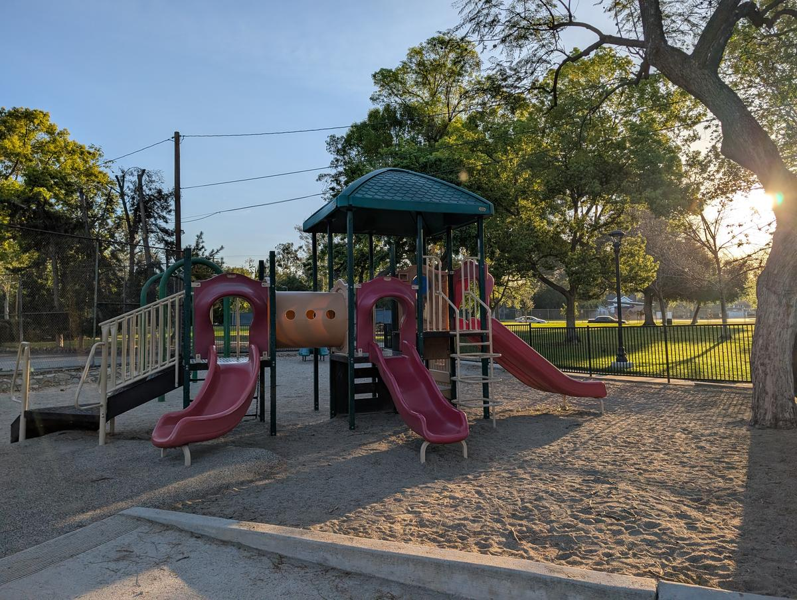

Claremont's reputation as the "City of Trees" isn't just for the aesthetic — it's a functional forest that provides the ultimate canopy for its real VIPs: the under-five crowd. Whether you're looking for a fully shaded classic or a trail-side adventure, the local parks are the primary "office" for Claremont parents. Here is your field guide to the best playgrounds in the Village and beyond, organized by the vibe of your morning.
The Village Heavyweights
The local celebrities. Located within walking distance of the central core, they are the perfect starting point for a day that ends with a stroll through the colleges.
Memorial Park
The "Classic Claremont" experience. This 7.2-acre park on Indian Hill Boulevard is famous for its massive old-growth trees — including historic American Elms — that provide total shade even in the July heat. It features a fully fenced-in playground area with a soft rubber surface, making it the ultimate "stress-free" zone for parents of runners.

Marston Quad (Pomona College)
The unofficial "backyard" for Village parents. A massive, pristine stretch of grass framed by historic academic buildings dating to 1923. It's the perfect spot for a picnic, a game of tag, or letting the kids marvel at the Blue Bridge nearby. Open to the public and offering a sense of collegiate grandeur that makes a simple game of catch feel like a cinematic event.
The Foothill Hidden Gems
As you move toward the mountains, the playgrounds get a bit more "wild." These are the spots for the kids who want a story with their slide and parents who want a break from the Village buzz.
Lewis Park
The city's freshly renovated playground. Following a community-led redesign with Kompan, Lewis Park now features two inclusive play areas designed for both older and younger kids. Located on Syracuse Avenue on the northern edge of town, the new equipment was chosen with input from the Better Claremont Playgrounds community group. Reopened March 2026.
Higginbotham Park
The "Secret Garden" of Claremont. Tucked along the Thompson Creek Trail on 4.5 acres, this park is best known for its iconic steam train play structure — a local rite of passage for generations. It also features boulder climbing mounds, infant swings, and sandy play areas. Use it as a rest stop during a long walk on the trail.
Joāt Park
The "Big Energy" park. Formerly Cahuilla Park, it was renamed in 2023 to Joāt Park — the Tongva word for Mount Baldy. The Tongva (also known as the Gabrielino) are the Indigenous people of the Claremont area and the greater Los Angeles basin. The original 1962 name honored the Cahuilla people, but that was a historical mix-up — the Cahuilla lived further east near Palm Springs. After more than a decade of advocacy by Claremont's Native American community, the city council corrected the record. With 18.2 acres of sprawling grassy fields and a massive play area, this is where you go when you need the kids to genuinely tire themselves out. The real draw for mixed-age groups is the proximity to the Guthrie Skate Park, tennis courts, basketball courts, and baseball fields — something for every age and energy level.
The Niche Specialists
Sometimes a standard swing set won't cut it. These parks offer those specific, "save-the-day" amenities that make a Saturday morning feel like a mini-vacation.
Wheeler Park & The Wading Pools
Wheeler is the "Summer Headquarters" for South Claremont — 7 acres with Claremont's only public pickleball courts. But it's part of a larger local tradition: during the peak summer months, the city opens its neighborhood wading pools at Wheeler, Memorial, and El Barrio parks. These shallow basins are life-savers during the Inland Empire's triple-digit days — perfect for toddlers who aren't quite ready for the deep end.
College Park
The "Sporty" park. Located south of the Metrolink tracks on South College Avenue, this 8.2-acre park is home to Claremont Little League. It sits right next to Claremont's original Pooch Park (open since 1996), making it the only logical choice if your "first baby" (the dog) needs a workout at the same time as your kids.
Shade matters: Memorial Park and Higginbotham have the best natural canopy. Lewis Park and Joāt Park are more exposed — bring hats and sunscreen in summer.
Wading pool season: The city pools typically open in summer. Check the city's reservation page for exact dates and hours.
The combo move: Start at Memorial Park, walk through the Pomona College campus to Marston Quad, then finish with coffee at Nosy Neighbors in the Village. That's a perfect Claremont parent morning.